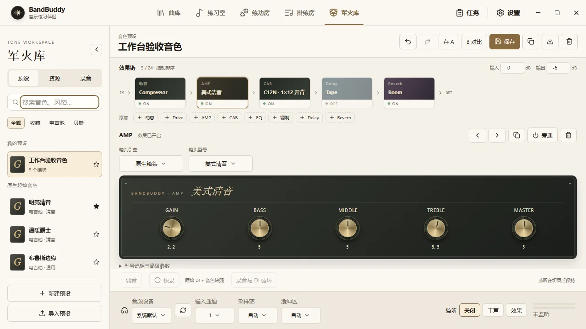
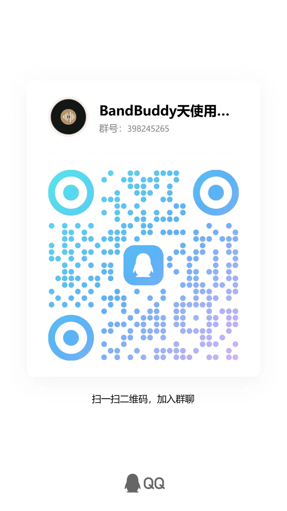

先听清，
再弹出自己的声音。
把一首歌，拆成你的练习伙伴。
在本机分离人声、鼓、贝斯、吉他、钢琴与其他声部，继续细分主唱与和声、木吉他与主音。独奏听清细节，静音后接过自己的声部。
变速、移调、A–B 循环，让每次练习只专注一个难点。
了解分轨与练习
读谱
五线谱、TAB、打击乐与钢琴大谱表，统一阅读。
专项
跟着体系路线图，找到当下要练的一个动作。
合奏
把节奏、音阶与乐句，放回真实的音乐关系里。
接上琴，
找到自己的声音。
军火库，从箱头到整条效果链。
5 款原生箱头、7 款物理箱体，搭配内置箱体 IR。也可以导入自己的 NAM 与 IR，连接单块、均衡、调制和空间效果，保存属于你的音色。
监听、A/B 对比与快录循环，让调整有据可听。
认识箱头与箱体
录下演奏比较 Take带进排练
人声细分
主唱与和声分开练，基础六轨就绪即可开始。
练功房
体系教材、读谱、专项练习与音乐工具箱。
军火库
原生箱头与箱体、NAM / IR、音色链和快录。
播放与录音
流式回放与局域网练琴，继续完善既有录音、排练。
邦邦 AI 与环境准备
图文对话、后台下载、校验恢复与已分轨数据导入。
让练习，
随手开始。
选择你的设备，把音乐带在身边。
PC 与 Android 安装包在 QQ 群内下载。iPhone 与 iPad 通过 App Store 获取。
各平台独立迭代，具体功能与版本可能不同。
查看平台与安装说明
无法唤起 QQ 时，可复制群号搜索。